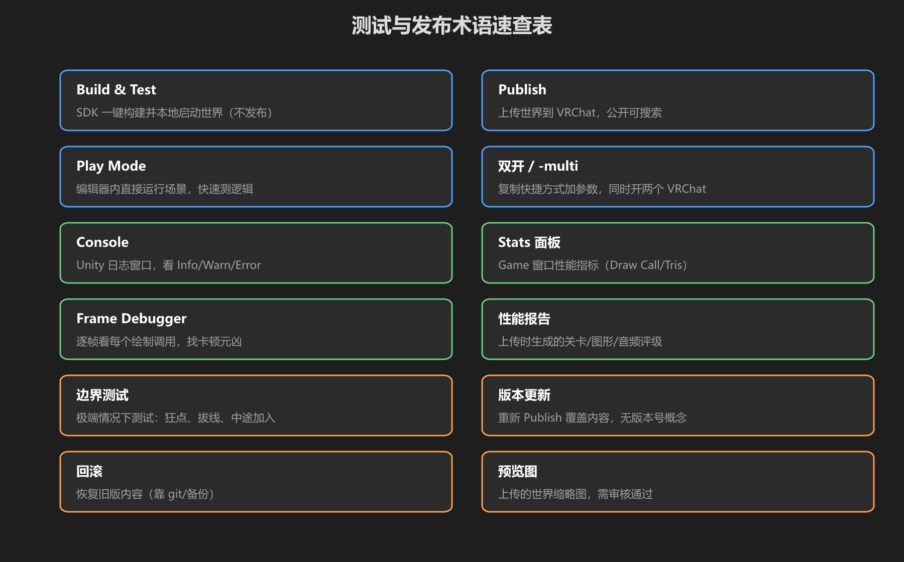
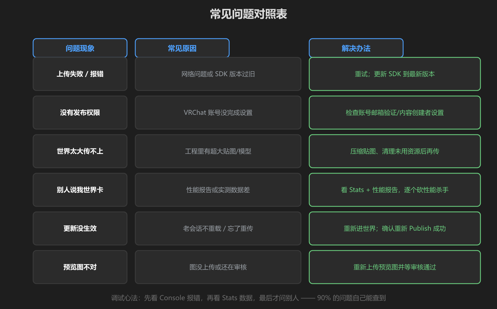
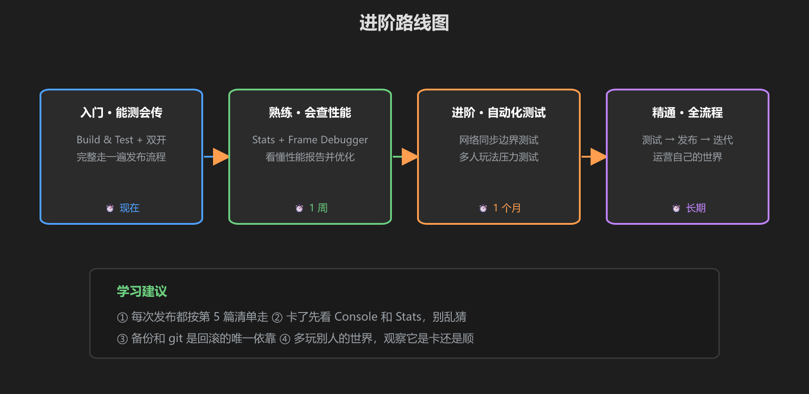

第 6 篇：速查表 — 术语、常见问题、进阶路线
本篇把全套教程压缩成三张表：忘了就翻回来。
1. 术语速查

图：12 个核心术语 —— 聊天、看文档、问人都用得上
| 术语 | 含义 |
|---|---|
| Build & Test | SDK 一键构建并在本地 VRChat 客户端启动世界（不发布） |
| Publish | 上传世界到 VRChat，公开可搜索、可进入 |
| Play Mode | Unity 编辑器内直接运行场景，快速测逻辑 |
| 双开 / -multi | 复制 VRChat 快捷方式加 -multi 参数，同时开两个客户端测多人 |
| Console | Unity 日志窗口，分 Info / Warning / Error 三级 |
| Stats 面板 | Game 窗口性能指标：Draw Call、SetPass、Tris 等 |
| Frame Debugger | 逐帧查看每个绘制调用，定位 Draw Call 元凶 |
| 性能报告 | 上传时生成的关卡/图形/音频评级（Good/Medium/Poor） |
| 边界测试 | 极端情况测试：狂点、拔线、新玩家中途加入 |
| 版本更新 | 重新 Publish 覆盖内容 —— 无版本号概念，旧版不存在 |
| 回滚 | 恢复旧版内容 —— 只能靠 git 提交或备份工程重传 |
| 预览图 | 世界的缩略图，首次上传需审核通过才可见 |
2. 常见问题对照表

图：六条高频问题 —— 现象、原因、解决办法
| 问题现象 | 常见原因 | 解决办法 |
|---|---|---|
| 上传失败 / 报错 | 网络问题或 SDK 版本过旧 | 重试；更新 SDK 到最新版本 |
| 没有发布权限 | VRChat 账号没完成设置 | 检查账号邮箱验证 / 内容创建者设置 |
| 世界太大传不上 | 工程里有超大贴图 / 模型 | 压缩贴图、清理未用资源后再传 |
| 别人说我世界卡 | 性能报告或实测数据差 | 看 Stats + 性能报告，逐个砍性能杀手 |
| 更新没生效 | 老会话不重载 / 忘了重新 Publish | 退出重新进世界；确认重新上传成功 |
| 预览图不对 | 图没传上去或还在审核 | 重新上传预览图并等审核通过 |
调试心法：先看 Console 报错，再看 Stats 数据，最后才问别人 —— 90% 的问题自己能查到。顺序反了就变成「到处乱猜」。
3. 进阶路线图

图：从「能测会传」到「全流程运营」
- 入门 · 能测会传（现在）：Build & Test + 双开，完整走一遍发布流程
- 熟练 · 会查性能（1 周）：Stats + Frame Debugger，看懂性能报告并优化
- 进阶 · 自动化测试（1 个月）：网络同步边界测试、多人玩法压力测试
- 精通 · 全流程（长期）：测试 → 发布 → 迭代，运营自己的世界
下一步建议：把《网络同步》教程学了 —— 多人测试时你遇到的大部分「奇怪现象」，根源都在同步模型。
学前检查清单
- 12 个术语能用自己的话解释清楚
- 六条常见问题的排查顺序刻进脑子
- 知道自己的下一步进阶方向